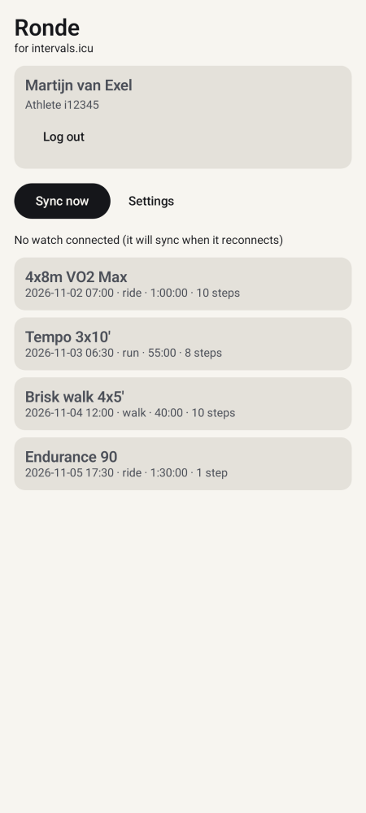
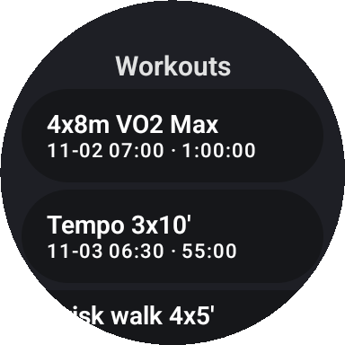
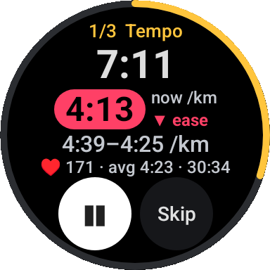

Ronde is a Wear OS and Android phone app. It puts your planned intervals.icu workouts on your watch, guides you through the intervals while you run, ride or walk, and uploads the recording back to intervals.icu.
The phone app logs in to intervals.icu and syncs your upcoming workouts to the watch. The watch plays them and records the activity.



Ronde is a personal project and is not affiliated with intervals.icu.